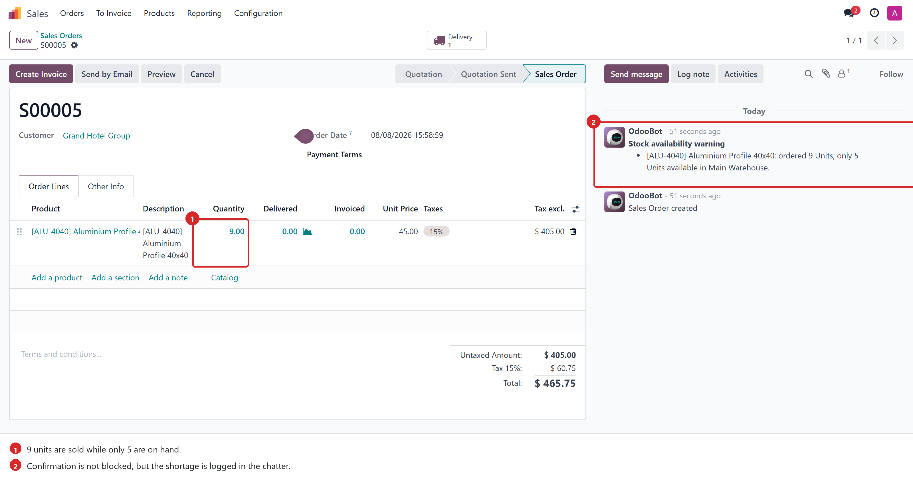
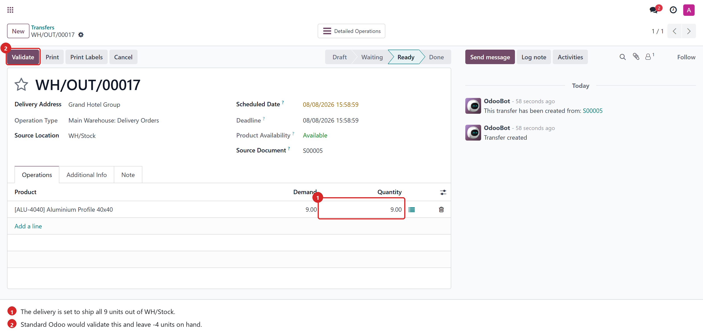
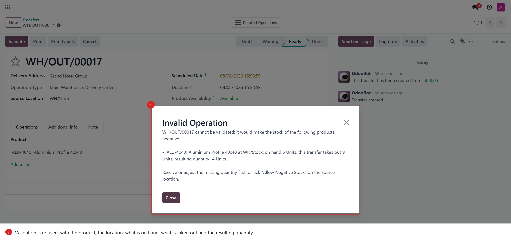
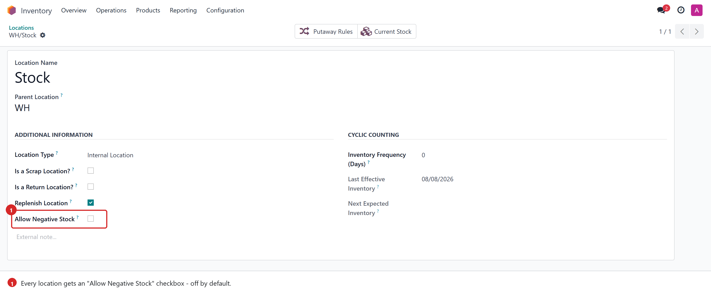
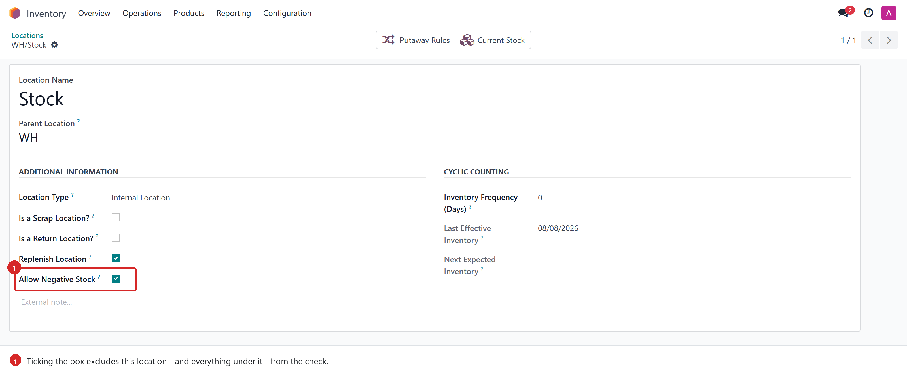
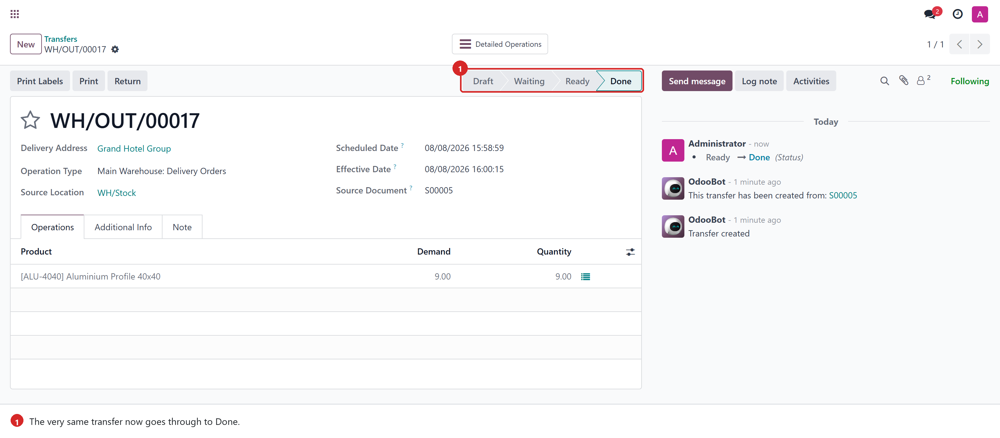
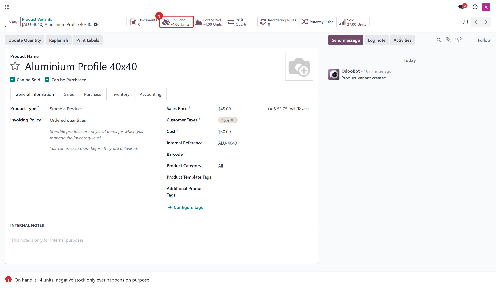

A transfer can no longer be validated when it would leave a negative quantity in the source location — unless you decided, location by location, that it may.
Standard Odoo never refuses a delivery. If a warehouse holds 5 units and someone ships 9, the transfer is validated and the on-hand quantity quietly becomes −4. Nothing is blocked, nothing is flagged: the stock valuation drifts, the reordering rules work on numbers that never existed, and the mistake is usually found weeks later during a physical count.
This module puts a stop right where the damage happens — on the Validate button. Before a transfer is done, it compares what is really on hand at each source location with what the transfer is about to take out, and refuses the validation when the result would be below zero. When negative stock is acceptable — a consignment area, a location fed by a night shift — you allow it explicitly, on that location.
Selling more than what you own is legitimate — the goods may arrive before the delivery date. So the confirmation is never blocked; the shortage is simply written in the order chatter, with the ordered quantity, the free quantity and the warehouse concerned.

The delivery generated by that order wants 9 units out of WH/Stock,
where only 5 are on hand. Standard Odoo shows no objection — the operator clicks
Validate as usual.

The transfer stays in Ready and the operator gets a message that actually says what to do: which product, which location, how much is on hand, how much the transfer takes out, and what the resulting quantity would be. One line per product, per location and per lot, so a 30-line transfer tells you exactly which lines are the problem.

Every location form gets an Allow Negative Stock checkbox, off by default. Tick it and that location is excluded from the check — together with every location underneath it, so a whole warehouse can be freed in one click.


With the box ticked, the very same transfer goes through to Done and the product ends at −4 units. Nothing is lost, nothing is forced: negative stock remains possible, it just stops being accidental.


| Operation | Behaviour |
|---|---|
| Delivery orders | Blocked when the source goes negative |
| Internal transfers, pick / pack / ship steps | Blocked when the source goes negative |
| Returns to a vendor | Blocked when the source goes negative |
| Receipts from a vendor, customer returns | Untouched — the source is a virtual location |
| Inventory adjustments | Untouched — a count may legitimately be negative |
| Services, consumables, kits | Untouched — no stock is tracked |
| Sales order confirmation | Allowed, shortage logged in the chatter |
stock.picking._pre_action_done_hook(), the official
extension point standard Odoo calls from button_validate() just before
_action_done(). Backorder and SMS wizards keep working: the check runs
again when the wizard calls back.(product, location, lot, package, owner) and converted to the product
unit of measure, so a move expressed in dozens is compared against units, and two
lines taking from the same shelf are counted together.stock.quant records that
_action_done() is about to decrement — not the "available"
quantity. A booking made by another transfer therefore never causes a false block.stock.location.allow_negative_stock is inherited by child locations
through the parent chain.sale.order.action_confirm() posts a note when a line
asks for more than the warehouse free quantity, then calls super().
One single code base runs on Odoo 17, 18 and 19, Community and Enterprise. The
version differences it has to deal with — storable products
(type = 'product' on 17 versus is_storable on 18/19) and the
sales line unit of measure (product_uom renamed
product_uom_id on 19) — are resolved from the live field definitions,
not from a version number.
Depends on stock and sale_stock. No configuration is needed
after installation: the check is active immediately and every location starts with
negative stock refused.